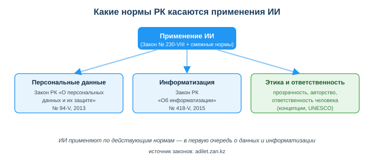
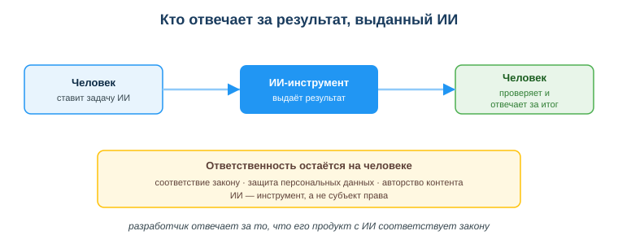

Нормативно-правовые аспекты ИИ в РК
Практическая ситуация
Ты сделал чат-бота для интернет-магазина. Чтобы он отвечал клиентам, ты загрузил в ИИ-сервис базу с именами, телефонами и адресами покупателей. Бот работает отлично — но через месяц приходит жалоба: клиент не давал согласия, чтобы его данные передавали стороннему ИИ-сервису. Кто виноват и какой закон нарушен?
С 18 января 2026 года в Казахстане действует профильный Закон «Об искусственном интеллекте» (№ 230-VIII от 17.11.2025). Вместе с ним применение ИИ регулируют смежные законы — о персональных данных и об информатизации. Разработчик обязан их знать: именно он отвечает за то, чтобы продукт с ИИ не нарушал эти нормы.

Что ты научишься делать
- называть законы РК, которые регулируют применение ИИ;
- объяснять, кто отвечает за результат, выданный ИИ;
- проверять, соответствует ли использование данных закону о персональных данных;
- учитывать вопросы авторства, прозрачности и этики ИИ-контента.
Почему это важно
ИИ всё чаще встраивают в реальные продукты: чат-боты, рекомендации, анализ данных. Каждый такой продукт работает с информацией о людях и должен соответствовать закону. Нарушение влечёт штрафы, блокировку сервиса и потерю доверия клиентов.
Связь с профессией: разработчик отвечает за то, чтобы его программа с ИИ соответствовала законодательству — особенно при работе с персональными данными. Это часть профессиональной ответственности, а не «дело юристов».
Учимся читать схему
Посмотри на схему норм РК выше. Ответь на вопросы:
- какой профильный закон РК напрямую регулирует ИИ и какие два смежных закона его дополняют?
- какие требования закон предъявляет к маркировке ИИ-контента и к ответственности за результат?
- где можно найти официальные тексты этих законов?
Главное понятие
Персональные данные — сведения, относящиеся к определённому или определяемому на их основании человеку (имя, телефон, адрес, ИИН и др.). В РК их сбор и обработку регулирует Закон «О персональных данных и их защите».
Проще: как только твоя программа (в том числе с ИИ) работает с данными людей, ты обязан соблюдать закон о персональных данных — получать согласие, защищать данные, не передавать их без оснований.
Как ИИ регулируется в РК
С 2026 года в РК есть профильный закон об ИИ, который работает вместе со смежными законами:
- Закон РК «Об искусственном интеллекте» (№ 230-VIII от 17.11.2025, действует с 18.01.2026) — профильный закон: вводит понятия (система ИИ, модель, синтетические результаты), классифицирует системы ИИ по степени риска и автономности, устанавливает запреты и требования прозрачности.
- Закон РК «О персональных данных и их защите» (№ 94-V, 2013) — как собирать, хранить, обрабатывать и передавать данные людей; требует согласия и защиты данных.
- Закон РК «Об информатизации» (№ 418-V, 2015) — общие правила для информационных систем, данных и цифровых сервисов.
Кроме того, действует Концепция развития искусственного интеллекта на 2024–2029 годы (постановление Правительства РК № 592 от 24.07.2024) — стратегический документ развития сферы.
Что важно знать разработчику из Закона об ИИ:
- Классификация по риску — системы ИИ делятся на минимальный, средний и высокий риск; для высокого риска повышенные требования к безопасности (есть и деление по автономности, где решение остаётся за человеком);
- Запрещённые системы ИИ — закон прямо запрещает ИИ для манипуляции поведением, эксплуатации уязвимости людей, социального скоринга, незаконной обработки персональных данных и дискриминации по биометрии;
- Маркировка синтетического контента — распространять сгенерированные ИИ изображения, видео, аудио и текст (в том числе дипфейки) можно только с маркировкой в машиночитаемой форме и видимым предупреждением; пользователя обязаны информировать о применении ИИ;
- Ответственность человека — за результат ИИ отвечает не программа, а собственник/владелец системы и человек, который её применил;
- Авторское право — произведение с ИИ охраняется только при творческом вкладе человека; обучать модели на чужих произведениях можно лишь при отсутствии запрета автора.
Правила в этой сфере новые и будут уточняться подзаконными актами — за ними нужно следить.
Мини-кейс
Студент сгенерировал курсовую целиком в ИИ и сдал как свою. Проблемы сразу две: авторство (работа не его) и достоверность (ИИ мог выдумать факты и источники). Правильно — использовать ИИ как помощника, проверять факты и указывать, что и как было сгенерировано.
Кто отвечает за результат ИИ
ИИ — это инструмент, а не субъект права. Поэтому за результат, выданный ИИ, отвечает человек, который его применил, и организация, которая выпустила продукт. Закон РК «Об искусственном интеллекте» прямо возлагает ответственность за результат и за информирование пользователей на собственников и владельцев систем ИИ.

Связь с международными рамками: UNESCO AI Competency Framework (2024) прямо относит к базовым компетенциям ответственное и этичное применение ИИ — понимание прав человека, защиты данных и ответственности. Казахстанские нормы движутся в ту же сторону.
Разбор типичной ошибки
Ошибка: «Раз результат выдал ИИ, то и отвечает за него ИИ — с меня спроса нет».
Почему: ИИ не является субъектом права и не может нести ответственность. По закону отвечает человек или организация, которые применили ИИ и выпустили результат. Ссылка «так сказал ИИ» не освобождает от ответственности за нарушение закона (например, утечку персональных данных).
Как правильно: считай ИИ инструментом — проверяй результат, не загружай чужие данные без согласия, указывай использование ИИ там, где это требуется, и помни, что итоговую ответственность несёшь ты.
Практика
Ответь письменно:
- Назови два закона РК, которые регулируют применение ИИ, и за что отвечает каждый.
- Объясни, кто несёт ответственность за результат, выданный ИИ, и почему.
Образец (часть ответа на пункт 1): «Закон РК "О персональных данных и их защите" (№ 94-V, 2013) регулирует сбор и обработку данных людей; Закон РК "Об информатизации" (№ 418-V, 2015) — общие правила для информационных систем и данных».
Самопроверка
- Я знаю профильный Закон РК об ИИ (№ 230-VIII) и два смежных закона, которые регулируют применение ИИ.
- Я могу объяснить, кто отвечает за результат, выданный ИИ.
- Я понимаю принципы: защита данных, ответственность человека, авторство, прозрачность.
Подумай
- В каком твоём учебном или будущем рабочем проекте ИИ будет работать с данными людей? Что нужно сделать, чтобы не нарушить закон?
- Почему закон требует маркировать ИИ-контент и информировать пользователя о применении ИИ — какие риски это снижает?
Итог
Что теперь делать:
- помни: с 18.01.2026 действует профильный Закон «Об искусственном интеллекте» (№ 230-VIII) вместе со смежными законами;
- знай главные законы: «Об искусственном интеллекте» (№ 230-VIII, 2025), «О персональных данных и их защите» (№ 94-V, 2013), «Об информатизации» (№ 418-V, 2015);
- учитывай требования закона об ИИ: классификация по риску, запреты, маркировка ИИ-контента, правила авторства;
- считай ИИ инструментом — ответственность за результат и соответствие закону несёшь ты.
Полезные ссылки
Источник: Закон РК «Об искусственном интеллекте» (№ 230-VIII, 2025), Закон РК «О персональных данных и их защите» (№ 94-V, 2013) и Закон РК «Об информатизации» (№ 418-V, 2015) по adilet.zan.kz; Концепция развития ИИ на 2024–2029 годы (ПП РК № 592 от 24.07.2024); UNESCO AI Competency Framework, 2024.
Материал разработан рабочей группой ТОО «Колледж Хекслет Казахстан» и одобрен к использованию в обучении решением Педагогического совета.